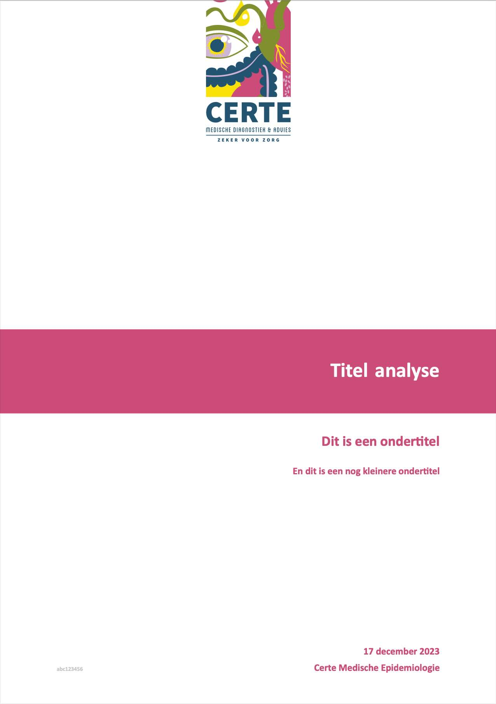
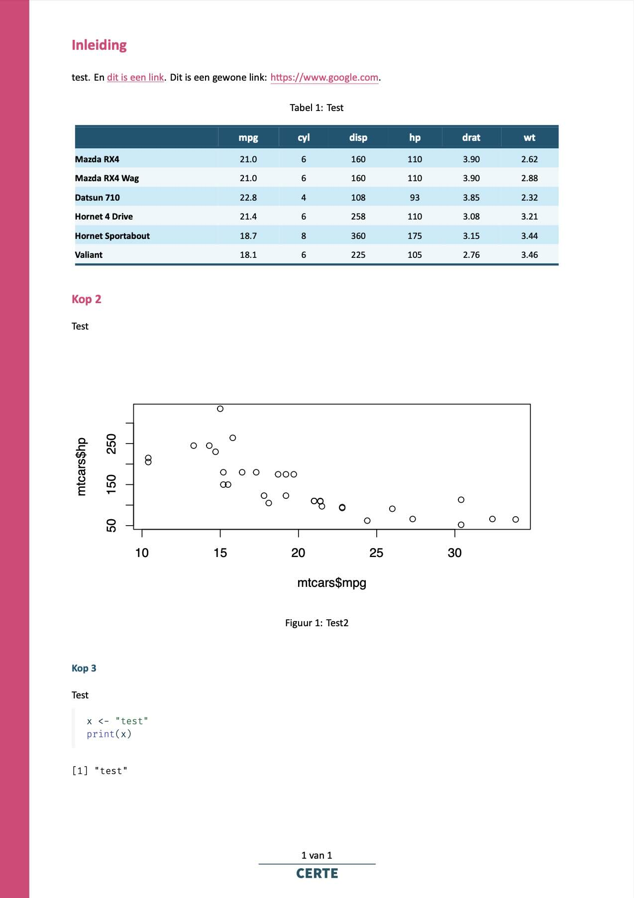
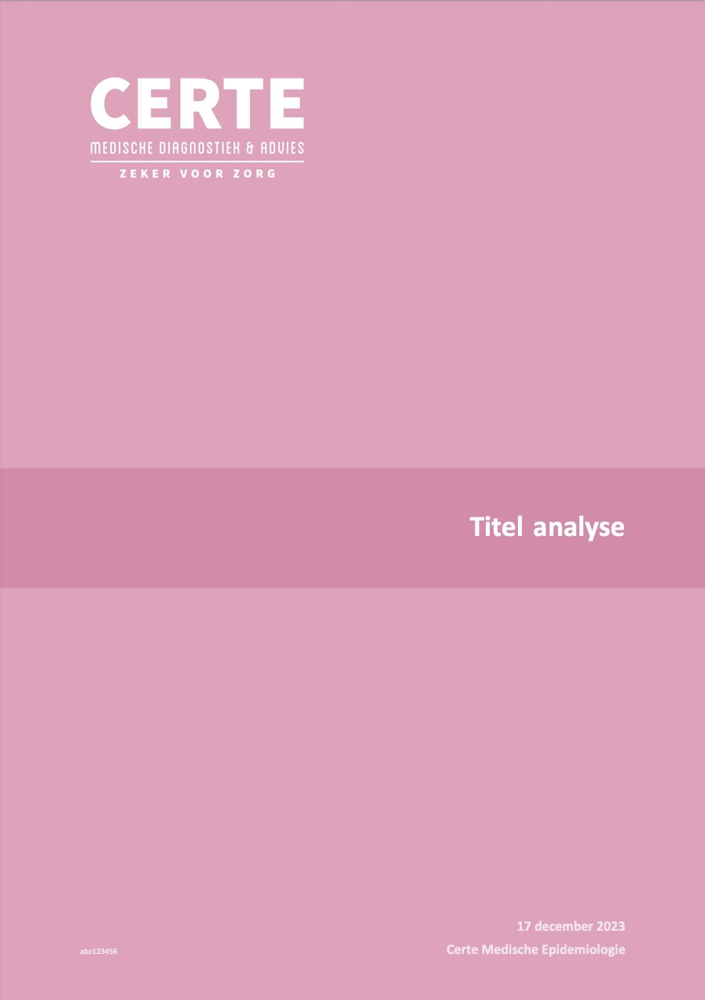
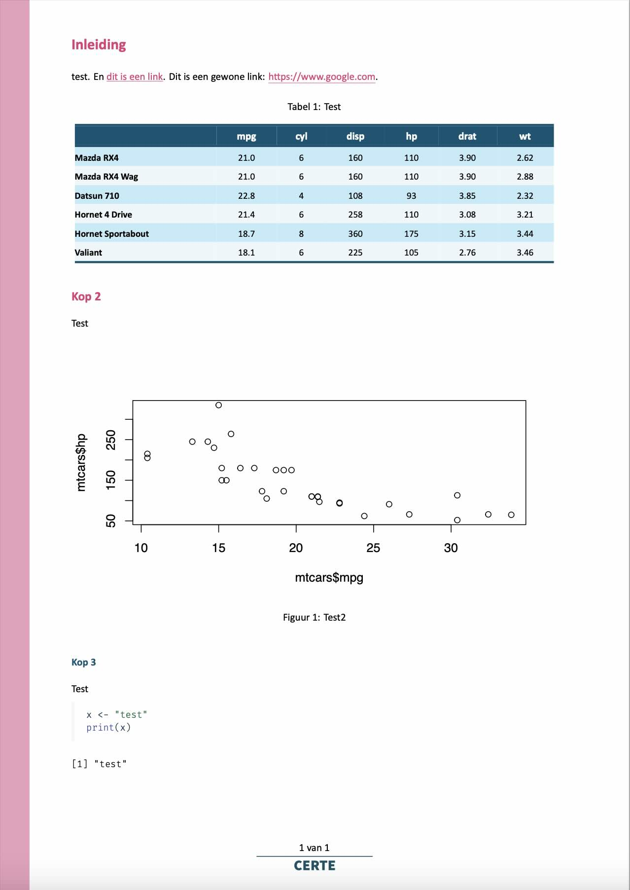

The letters of the name [TeX] are meant to represent the capital Greek letters tau, epsilon, and chi, as TeX is an abbreviation of τέχνη (ΤΕΧΝΗ technē), Greek for both “art” and “craft”, which is also the root word of technical. English speakers often pronounce it /tɛk/, like the first syllable of technical.
Wikipedia about the pronounciation of TeX
This certestyle package comes with a robust
and flexible TeX template designed for a variety of documentation
needs. This template is an essential tool for creating our departments’
high-quality documents. The template has a variety of options that can
be set to alter the look and feel.
The YAML header of a Quarto file (.qmd) or R Markdown
file (.Rmd) should at least contain the formatting output
to be PDF, the PDF engine, and the path to the TeX file:
# for Quarto
format:
pdf:
pdf-engine: "xelatex"
template: "/path/to/library/certestyle/rmarkdown/latextemplate/certe.tex"
lang: "nl"
# for R Markdown
output:
pdf_document:
latex_engine: "xelatex"
template: "/path/to/library/certestyle/rmarkdown/latextemplate/certe.tex"
lang: "nl"Note that this snippet is not required on Quarto if making
use of _quarto.yaml in a parent folder.
Setting lang will make sure that all automated TeX texts
are translated, such as “Table of Contents”, “List of Figures”, “Table”,
“Figure”, etc. This setting accepts an ISO-639-1
code such as "nl" for Dutch and "de" for
German.
The following so-called ‘keys’ can be set for the title page.
title
The title for the document. If left blank or omitted, there will be
no title page, thus ignoring subtitle,
subtitle2, author, date and other
title page related fields.
subtitle / subtitle2
The subtitle(s) for the document. They will appear directly below the
title. subtitle2 will appear smaller than
subtitle. Either can be used without the other.
author
The author name of the document. Can be omitted to leave blank. To
automate, this can be rmarkdown_author() to read the key
user.{username}.fullname from the secrets file. Be sure to add
certestyle::, since no packages are loaded yet at the
moment the YAML is being processed.
date
The date of the document. Can be omitted to leave blank. For R
Markdown, this can be any text, so use e.g. format2() to
format the date into the right format. But for Quarto, this
must be in YYYY-MM-DD. You can then set the format
using the date-format key. See this Quarto page
for date formats.
identifier
This will be printed on the bottom left of the title page as a small
string. For Certe projects, this should always be
certeprojects::project_identifier(), which generates the
project identifier automatically based on the file name or path:
titlepage-logo
The title page can contain a logo at the top of 16x7 cm, by setting
titlepage-logo to an image or (preferably) a PDF file.
Currently included logos for the title page are:
certe-tekst-blauw-links.pdfcerte-tekst-blauw-midden.pdfcerte-tekst-wit-links.pdfcerte-tekst-wit-midden.pdfcerte-umcg-ggd.pdfcerte-umcg.pdfcerte.pdfumcg-wit.pdfumcg.pdfUsing rmarkdown_logo(), they can be set without the need
to specify the library path.
titlepage-logo: "`r certestyle::rmarkdown_logo('certe')`"
# or a custom path
titlepage-logo: "/path/to/library/certestyle/rmarkdown/latextemplate/certe.pdf"For backwards compatibility, logofront can also be used
instead of titlepage-logo.
Setting the initial height and width of figures, and the table of
contents (toc), is dependent on whether you use the TeX
template for R Markdown or Quarto.
# for Quarto
title: "Some title"
fig-width: 6.5
fig-height: 3.5
toc: true
toc-depth: 2
# for R Markdown
title: "Some title"
output:
pdf_document:
# notice the underscore (_), instead of a hyphen (-)
# and placement below output > pdf_document
fig_width: 6.5
fig_height: 3.5
toc: true
toc_depth: 2Values have to be set in inch, so remember that \(cm = inch * 2.54\). The default figure width of 6.5 inch (16.5 cm) is approximately page-wide for A4 portrait.
Additionally, in Quarto, a List of Tables (lot) and a
List of Figures (lof) can be printed. They are similar to a
Table of Contents and will print just after the title page, by setting
these keys to true. Their default is
false.
All colours can be set separately, greatly influencing the look and
feel of the resulting document. All colours must be set in HTML-codes,
with or without #, such as #000000 or
000000 for black. Colour names (such as
"black") do not work, unless
certestyle::colourpicker() is used.
These are the defaults and what they mean:
colour-titlepage-titlebanner: "#4A647D" # horizontal banner colour for the title
colour-titlepage-full: "#FFFFFF" # full page colour for title page
colour-verticalbars: "#4A647D" # 1 cm wide vertical bar to left (odd) and right (even) page edges
colour-title: "#FFFFFF" # colour of title
colour-subtitle: "#4A647D" # colour of subtitle
colour-subtitle2: `colour-subtitle` # exception - this is the same as `colour-subtitle` at default
colour-author-date: "#4A647D" # colour of author name and date on title page
colour-identifier: "#CBCBCB" # colour of project identifier on title page
colour-heading1: "#4A647D" # colour of heading 1
colour-heading2: "#B4527F" # colour of heading 2
colour-heading3: "#4A647D" # colour of heading 3
colour-url: "#B4527F" # colour of for URL's and href, so [text](www.site.com) and <www.site.com>You can set these using a function as well:
colour-main
Furthermore, colour-main can be set as a default for the
following fields:
colour-titlepage-titlebannercolour-verticalbarscolour-subtitlecolour-subtitle2colour-author-datecolour-heading1This means that you can quickly change the primary colours of the
template. You can set colour-main and then override some of
the colours it sets.
Use mainfont for the general font, and
monofont for syntaxes. The default values are:
They have to be installed on the system level. Cross-platform fonts
(that are available on Windows, macOS, and Linux) are e.g. Verdana and
Arial for mainfont, and Courier New for
monofont.
At the bottom of each page after the title page, you can remove the page numbers:
The page numbers will be print in the format "x of y"
Note that the text " of " is language-specific. This text
is set in the TeX template and only supports lang: nl
(which prints "x van y") and lang: de (which
prints "x von y"). It will assume Dutch if
lang is not set. It will print "x of y" in all
other cases.
Below the footer text, a PDF file can be placed, e.g. with a small organisational logo. It must be 16x0.7 cm.
For backwards compatibility, logofooter can also be used
instead of footer-logo.
These examples work in both R Markdown and Quarto. For each example, this was set:
title: "Titel analyse"
subtitle: "Dit is een ondertitel"
subtitle2: "En dit is een nog kleinere ondertitel"
author: "Certe Medische Epidemiologie"
date: "`r Sys.Date()`"
date-format: "D MMMM YYYY"
identifier: "abc123456"
# logo's
titlepage-logo: "`r certestyle::rmarkdown_logo('certe')`"
footer-logo: "`r certestyle::rmarkdown_logo('footer')`"This example sets colour-main to directly influence
different elements such as the title page elements, and heading 1:

This example adds another logo (white Certe letters, aligned to the
left) and uses colour-titlepage-full to give the title page
a completely new look:
# certeroze for main elements
colour-main: "`r certestyle::colourpicker('certeroze')`"
# certeroze2, somewhat lighter than certeroze
colour-titlepage-titlebanner: "`r certestyle::colourpicker('certeroze2')`"
# certeroze3, lighter than certeroze2
colour-titlepage-full: "`r certestyle::colourpicker('certeroze3')`"
colour-subtitle: "`r certestyle::colourpicker('certeroze3')`" # this effectively makes text invisible
colour-subtitle2: "`r certestyle::colourpicker('certeroze3')`" # this effectively makes text invisible
colour-verticalbars: "`r certestyle::colourpicker('certeroze3')`"
# certeroze5, a very bright certeroze variant
colour-author-date: "`r certestyle::colourpicker('certeroze5')`"
colour-identifier: "`r certestyle::colourpicker('certeroze5')`"